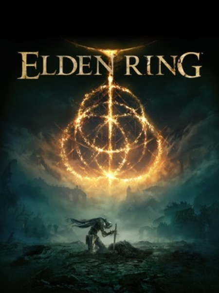

RPG · 2022
Elden Ring
Souls design poured into open country; mystery you find rather than read.

Cover: Wikipedia: Elden Ring
Facts
- Released
- 2022-02-25
- Genre
- Action RPG
- Category
- RPG
- Platforms
- Nintendo, PC, PlayStation, Xbox
- Developers
- FromSoftware
- Publishers
- Bandai Namco Entertainment, FromSoftware
PC requirements
- Minimum
- [object Object]
- Recommended
- [object Object]